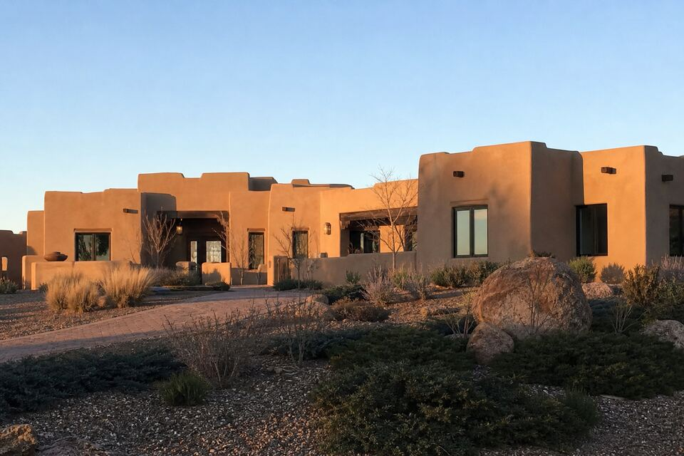

Stucco Work in Las Campanas, NM
Las Campanas homes are custom builds with designer finishes and long parapet runs — where a stucco repair is only finished when you cannot find it. Cracks, parapets, color, or a full project — call (505) 416-4951 or send the form; one plain sentence about the wall is enough.

The standard here is invisibility
On a production house a decent patch passes; on a Las Campanas custom with an integral-color finish and a deliberate texture, a visible repair is a defect. Work here runs at finish-matching standard — texture replicated, color blended against real sun-fade, sheen respected — and the honest conversation happens up front about when a wall’s repair history means a sectional refinish is the only result worth paying for. Large homes also mean scale: long elevations, tall gables, courtyard walls, and staging that gets planned rather than improvised.
The architecture adds the parapet factor at full size — extensive flat-roof parapet runs and sculpted caps that take the weather for hundreds of linear feet. The parapet walk is the highest-value half hour on any Las Campanas visit, and metal coping conversations come up here more than anywhere in the area.
Services available in Las Campanas
The full lineup runs here as it does across the area: repair, re-stucco and color coats, new installation, and parapet and canale work — with the material guide deciding what belongs on which wall and the cost guide covering what moves the number.
Wall on your mind in Las Campanas?
Send the form with your area and what you are seeing. The look-at-it visit does the diagnosing; the itemized quote follows.
Questions people ask
Can a repair really match a custom integral-color finish?
Close enough to disappear at conversation distance, with honesty about the rest — sun-fade means perfect day-one matches don't exist. Where a wall's history fights blending, you hear the sectional-refinish option with numbers, not after the fact.
Our parapets run the whole house. What should we watch?
Cap cracks and the stucco just below them — long runs fail at movement points first. An annual fall walk of the caps is cheap insurance at this scale.
Do you coordinate with builders or designers?
Yes — finish specs, sample boards, and working alongside the trades on additions and renovations is normal Las Campanas work.